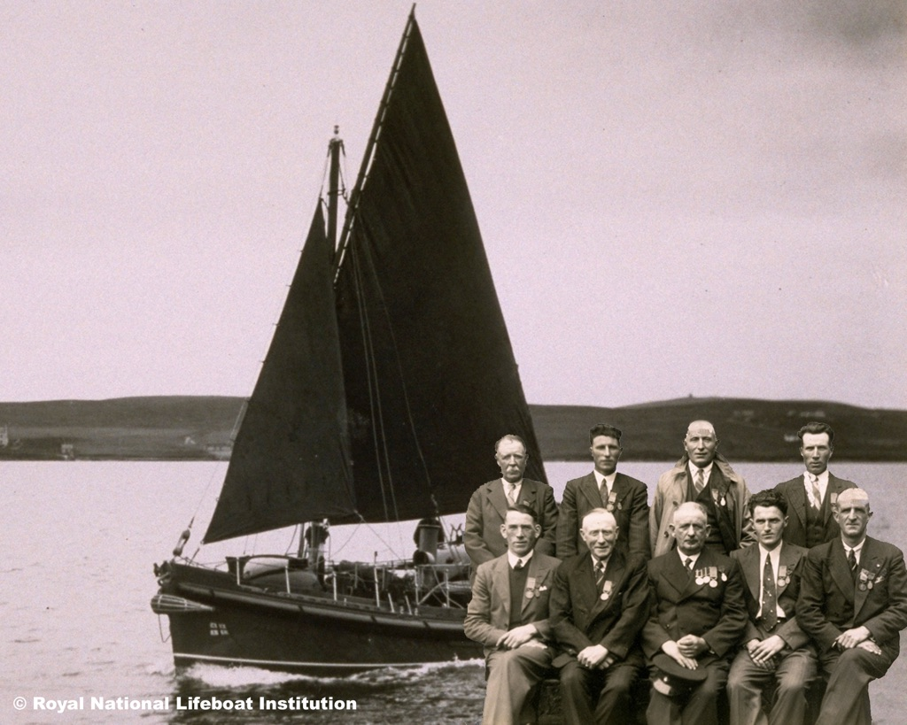

I'll Go - The Single
On December 7, 1940 the Dutch steamer Stolwijk ran aground off the coast of Donegal in hurricane force winds. The crew of the Arranmore lifeboat risked their lives to rescue 18 men in the worst weather conditions that locals can remember before or since.
Jerry Early a native of Arranmore was aware of the rescue from a young age and although most of the crew were still alive during his childhood, the men involved rarely if ever spoke about that night. It was not their way to seek praise or indulge in self congratulation.
The Lifeboat Association, however, recognised their exceptional efforts with a gold medal for coxswain Jack Boyle and silver and bronze medals for his crew, this honour was replicated with medals from Queen Wilhelmina of the Netherlands. This is one of only three gold medal crews in the history of Irish lifeboats.
The story of December 1940 stayed with Jerry and last year he finally decided it was time these heroes were given a fitting tribute. Along with John Gallagher he composed a song dedicated to the memory of the crew and their actions that night, the resultant song entitled simply, ‘I’ll Go’ will be released on Monday – 75 years after the rescue.
The song has been described as not just a ballad but a piece of local history come to life.
The first airing of the song can be heard on Highland radio on Monday night on the Jimmy Stafford show between 9pm and 10pm.
Buy / Download
The song is available to download on iTunes, Apple Music, Spotify, Google Play, YouTube Music, Tidal and Amazon Music. Any profits resulting in the sale of the track will go towards a lasting memorial to the crew.
A word from Jerry Early
75 years today one of the greatest rescues in the history of the lifeboat institution took place when the crew of...
Posted by Jerry Early on Sunday, 6 December 2015
The crew of the Arranmore lifeboat who risked their lives for the Dutch steamer Stolwijk.

The crew, from the back: Johnny Byrne (Father of Phil and Neily), Phil Byrne, Teague Ward, Neily Byrne.
Front: Brian Gallagher, Paddy O'Donnell, John Boyle, Joe Rodger, and Phil Boyle.